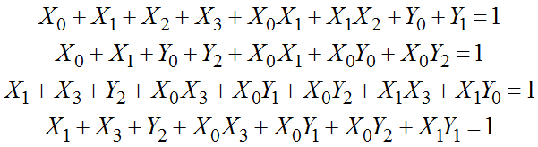
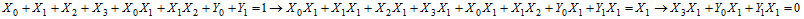
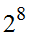
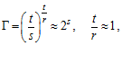

Алгебраические методы криптоанализа, несмотря на то, что они в настоящее время еще недостаточно развиты, являются одними из самых перспективных в отношении практического взлома. Теоретически, они позволяют определять секретный ключ с помощью анализа одной или двух пар "открытый текст/шифртекст". Суть этих методов заключается в построении сверхопределенной разреженной системы нелинейных уравнений, описывающей поведение алгоритма, решение которой дает секретный ключ, используемый при шифровании. Для составления этой системы требуется несколько блоков открытого текста и соответствующего ему шифртекста.
Сверхопределенная система уравнений − система, в которой уравнений намного больше, чем переменных. Разреженная система уравнений − это система, в которой каждое уравнение имеет небольшое количество членов.
Алгебраический криптоанализ − это метод криптоанализа, основанный на построении детерминированной математической модели блочных шифров, имеющей вид сверхопределенной разреженной системы нелинейных (обычно квадратичных) уравнений, решением которой является ключ шифрования. Принципиальной особенностью алгебраического криптоанализа является то, что его сложность растет субэкспоненциально с ростом числа раундов, что позволяет проводить криптоанализ шифров без уменьшения числа раундов, как это часто делалось в классических вероятностных методах, а это повышает практическую применимость методов алгебраического криптоанализа.
Единственным нелинейным компонентом блочных шифров являются подстановки, которые могут быть описаны системой нелинейных уравнений. Максимальная степень этих уравнений зависит от размерности подстановок, но для проведения анализа выбираются уравнения, содержащие члены минимальной степени, как правило, используются только члены 1 и 2 степени. Поиск разреженных квадратных уравнений, описывающих нелинейный компонент, используемый блочным шифром, является нетривиальной задачей, пока не имеющей эффективных и универсальных методов решения. Как правило, при этом используются разновидности метода перебора, не дающие хороших результатов. При малом размере подстановок появляется возможность перебрать все возможные уравнения и выбрать из них наиболее подходящие для составления базиса, чего нельзя сделать для подстановок размерности 8 бит из-за большого объема требуемых вычислений.
Так, например, для случайной подстановки размерности 4 бита, представленной в табл. 3.11, могут быть найдены следующие квадратичные уравнения:

Таблица 3.11
Пример подстановки размерности 4 бита
0 |
1 |
2 |
3 |
4 |
5 |
6 |
7 |
8 |
9 |
a |
b |
c |
d |
e |
f |
5 |
a |
6 |
1 |
e |
4 |
b |
3 |
7 |
2 |
8 |
9 |
0 |
d |
c |
f |
.
Всего существует 21 такое уравнение. Существует ряд методов, позволяющих получить дополнительные уравнения из уже имеющихся. Например, простым умножением уравнения на 2 можно получить новое уравнение:
.
Для построения систем уравнений не обязательно используются двоичные переменные, например, для атаки на урезанную версию алгоритма Rijndael использовались уравнения с переменными в поле .
Исследования показали, что используемые в ряде алгоритмов подстановки (Square, Rijndael) не являются случайными и допускают построение очень разреженных систем квадратичных уравнений из-за своих алгебраических свойств. Алгебраические свойства присущи таким компонентам, из-за особенностей их построения на основе обратной функции в поле. Так как этот метод построения является одним из немногих методов получения подстановок большой размерности (8 бит) с оптимальными линейными и дифференциальными характеристиками, требование отсутствия алгебраической структуры не выполняется во многих алгоритмах шифрования. Хорошим предложением по противодействию алгебраическим методам является использование случайных подстановок большого размера.
Сложность нахождения ключа с помощью алгебраического криптоанализа в основном зависит от размерности системы уравнений и степени ее разреженности. Формула для определения применимости АК:

где r – число уравнений в системе, t – число одночленов в этих уравнениях, s – размерность подстановки.